Wasserstein GAN: Clipping and an Input-Gradient Penalty
Abstract
Two small Wasserstein games fit the same400 points from eight noisy two-dimensional ring components. Each2→16 tanh→2 generator has82 optimized values; its2→16 tanh→1 critic has65. The clipped variant uses RMSProp and clips every critic tensor, including biases, before fitting and after each critic write. The penalty variant uses Adam and differentiates the actual critic input Jacobian through critic parameters. Both take three fresh-noise critic steps on a shared real batch, then one fresh generator step through the updated critic. The complete native program keeps every optimizer/clip call visible and reproduces the source artifacts. Three epochs leave both generated distributions far from the ring. The reported critic gaps are unconverged game diagnostics, not certified Wasserstein distances.
Separate the sample map, critic update and input-gradient path
The references are [Arjovsky, Chintala and Bottou, Wasserstein GAN (2017)](https://arxiv.org/abs/1701.07875) and [Gulrajani et al., Improved Training of Wasserstein GANs (2017)](https://arxiv.org/abs/1704.00028). This repository uses tiny tanh/linear teaching networks and three critic steps per batch. It does not reproduce the papers' image-model architectures or benchmarks. All147 parameters in eight tensors are checkpointed. Two stores and two optimizer states belong to each independent trial; the trials do not share fitted weights.
#include <dm/dm.hpp>
int main() {
std::filesystem::create_directories("build");
dm::graphics::Diagram d(48, 1400);
dm::graphics::DiagramNodeStyle a;
a.width = 10;
a.height = 4.6;
a.font_size = 43;
d.node("z", {-18, 0}, "Fresh noise z (2)", a)
.node("g", {-6, 0}, "G: tanh16 → 2\n82 parameters", a)
.node("c", {18, 0}, "Critic: tanh16 → 1\n65 parameters\nRaw scores", a)
.node("real", {18, 12}, "Shared real batch\nThree critic steps", a)
.node("hat", {6, -12}, "Detached xhat\nalpha * real\n+ (1-alpha) * fake", a)
.node("jac", {18, -12}, "Actual input Jacobian\nCreate critic history\nNorm penalty", a)
.node("alpha", {-6, -12}, "Midpoint alpha\nExternal paths stop", a)
.node("update", {6, 12}, "C / C / C then G\nClip after each C\nor GP with Adam", a)
.edge("z", "g")
.edge("g", "c")
.edge("real", "c")
.edge("g", "hat")
.edge("alpha", "hat")
.edge("hat", "jac")
.edge("jac", "c")
.edge("update", "c")
.save_svg("build/wgan_method.svg");
}
Check a penalty derivative by hand before fitting anything
For the supplied linear critic c(x)=wT x with w=(3,4), its input Jacobian isw, its norm is5 and the unit-norm penalty is(5-1)2=16. The derivative with respect to w is2*(5-1)*w/5=(4.8,6.4). This is a derivative through an input derivative; detaching the Jacobian would lose the parameter path needed by WGAN-GP. The source uses sqrt(sum(J^2)+1e-12), whose tiny guard is retained below. This toy has no learned parameters or adversarial updates and is distinct from the tanh critic.
#include <dm/dm.hpp>
int main() {
namespace n = dm::nn;
auto t = n::DType::Float64;
auto x = n::ones({2, 2}, t).requires_grad_(), w = n::tensor({3., 4.}, {2, 1}, t).requires_grad_();
n::GradOptions options;
options.create_graph = true;
auto j = n::grad(n::sum(n::matmul(x, w)), {x}, options)[0];
auto penalty = n::mean(n::square(n::sqrt(n::sum(n::square(j), {1}) + 1e-12) - 1.));
auto dw = n::grad(penalty, {w})[0];
if (std::abs(penalty.item() - 16) > 1e-10 || std::abs(dw.at({0, 0}) - 4.8) > 1e-10 ||
std::abs(dw.at({1, 0}) - 6.4) > 1e-10)
throw std::runtime_error("linear penalty derivative");
std::print("Penalty={}, derivative dw={}\n", penalty.item(), dw.values_str());
std::vector<double> scale, value;
for (int k = 0; k <= 60; ++k) {
double a = k * .02;
scale.push_back(a);
value.push_back(std::pow(std::sqrt(25 * a * a + 1e-12) - 1, 2));
}
auto p = dm::graphics::RPlot::create();
p.y_limits(-.5, 40)
.lines(scale, value, "Supplied w=scale*(3,4)", {37, 99, 235}, 2)
.x_label("Scale of the supplied critic weights")
.y_label("Squared distance of input-gradient norm from1")
.title("The norm target is1, not a zero gradient")
.save_svg("build/wgan_linear_penalty.svg");
}Penalty=16.000000000000796, derivative dw=[[4.8], [6.4]]
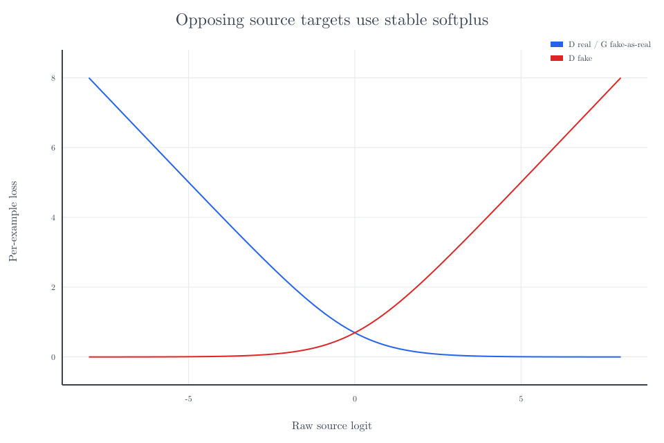
Make the interpolation a detached leaf
For supplied real=(-2,0), fake=(2,0) and alpha=0,.25,.5,.75,1, the segment runs from fake to real. The source creates xhat=(alpha*real+(1-alpha)*stop(fake)).detach() and differentiates critic(xhat) with respect to that new leaf. All external real/alpha/G paths stop; critic parameter paths through the resulting Jacobian remain available when create_graph is enabled.
A supplied quadratic critic c(x)=.5*sum(x^2) makes this visible: J(x)=x, so its penalty depends on where xhat lies. The toy below verifies unused external paths after detaching and a nonzero alpha derivative when the detach is omitted. This controlled critic is not the fitted tanh network.
#include <dm/dm.hpp>
int main() {
namespace n = dm::nn;
auto t = n::DType::Float64;
auto real = n::tile(n::tensor({-2., 0.}, {1, 2}, t), {5, 1}).requires_grad_(),
fake = n::tile(n::tensor({2., 0.}, {1, 2}, t), {5, 1}).requires_grad_(),
alpha = n::tensor({0., .25, .5, .75, 1.}, {5, 1}, t).requires_grad_();
auto raw = alpha * real + (1. - alpha) * fake;
auto hat = raw.detach();
hat.requires_grad_();
n::GradOptions graph;
graph.create_graph = true;
auto j = n::grad(.5 * n::sum(n::square(hat)), {hat}, graph)[0];
auto penalty = n::mean(n::square(n::sqrt(n::sum(n::square(j), {1}) + 1e-12) - 1.));
n::GradOptions unused;
unused.allow_unused = true;
auto stopped = n::grad(penalty, {real, fake, alpha}, unused);
for (auto& v : stopped)
if (v.defined())
throw std::runtime_error("external interpolation path");
auto live_j = n::grad(.5 * n::sum(n::square(raw)), {raw}, graph)[0];
auto live_penalty = n::mean(n::square(n::sqrt(n::sum(n::square(live_j), {1}) + 1e-12) - 1.));
auto da = n::grad(live_penalty, {alpha})[0];
if (n::max(n::abs(da)).item() < 1)
throw std::runtime_error("missing non-detached control");
std::print(
"Detached external gradients undefined; non-detached max alpha partial={}.\n",
n::max(n::abs(da)).item());
auto xs = n::select(hat, 1, 0).to_vector<double>(), ys = n::select(hat, 1, 1).to_vector<double>();
auto p = dm::graphics::RPlot::create();
p.x_limits(-3, 3)
.y_limits(-1, 1)
.lines(xs, ys, "Supplied interpolation segment", {37, 99, 235}, 2)
.points(xs, ys, "", {37, 99, 235}, 5)
.x_label("Coordinate1; alpha0 at fake2, alpha1 at real-2")
.y_label("Coordinate2")
.title("A new interpolation leaf stops external paths")
.save_svg("build/wgan_interpolation.svg");
}Detached external gradients undefined; non-detached max alpha partial=1.6000000000002002.
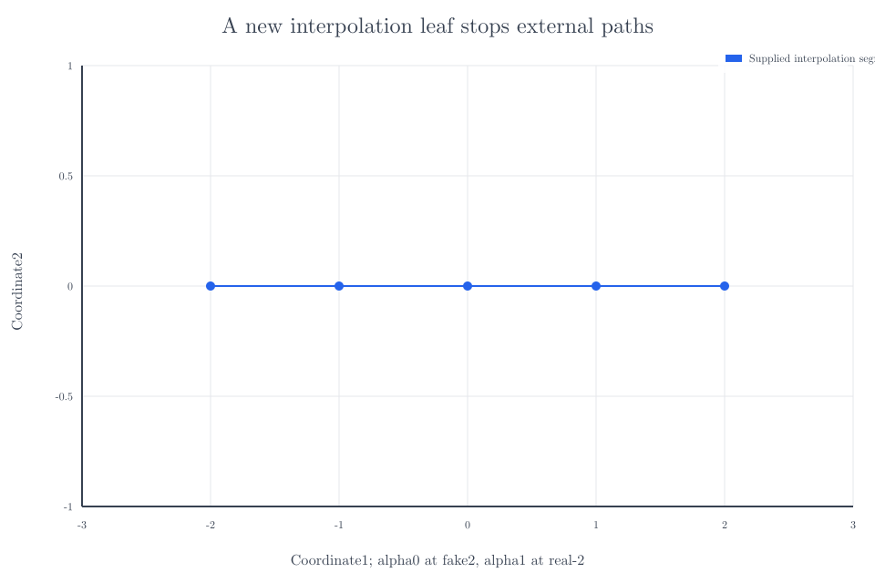
Clip biases as well as kernels, at an explicit point in the schedule
The original clipping trial constrains every critic tensor to[-.01,.01] once
after initialization and again after every critic optimizer step. It does not
clip after G. The next hand check supplies magnitude.2 to all four critic tensors,
including the two bias vectors, and calls ClipWassersteinCritic once. That
function validates every candidate before any write and preserves names/order/
gradient flags. Weight clipping alone does not certify a1-Lipschitz critic.
#include <dm/dm.hpp>
int main() {
namespace n = dm::nn;
n::ParameterStore c(5503);
n::models::WassersteinCritic(c, n::zeros({1, 2}));
std::vector<double> index, before, after;
int k = 0;
for (auto& name : c.names()) {
c.set(name, n::full(c.at(name).shape(), (++k % 2) ? -.2 : .2));
index.push_back(k);
before.push_back(n::max(n::abs(c.at(name))).item());
}
n::models::ClipWassersteinCritic(c);
for (auto& name : c.names()) {
after.push_back(n::max(n::abs(c.at(name))).item());
if (after.back() != double(.01f))
throw std::runtime_error("all critic tensors clipped");
}
auto p = dm::graphics::RPlot::create();
p.y_limits(0, .3)
.lines(index, before, "Supplied magnitude.2", {220, 38, 38}, 2)
.points(index, before, "", {220, 38, 38}, 4)
.lines(index, after, "Explicit clip to.01", {37, 99, 235}, 2)
.points(index, after, "", {37, 99, 235}, 4)
.x_label("1 hidden/W;2 hidden/b;3 output/W;4 output/b")
.y_label("Maximum absolute value in each tensor")
.title("Every critic leaf is constrained, including biases")
.save_svg("build/wgan_clipping.svg");
}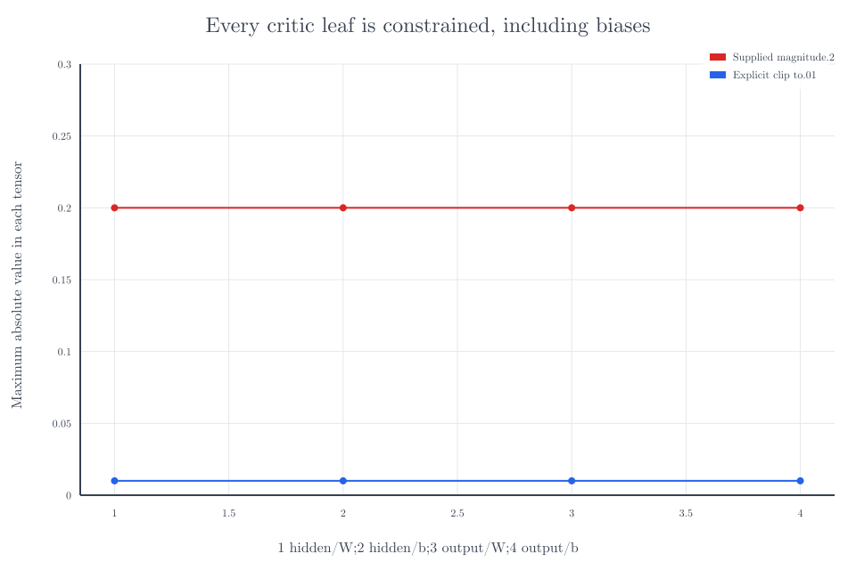
Generate three independent ordered ring pools through the native API
GaussianRingPoints cycles component i%8 around radius2 and adds independent
Gaussian deviation.08 using local source-compatible midpoint/Box-Muller streams.
The fitting pool has400 rows(seed5507), validation128(seed5519), and test128
(seed5521). This is a synthetic teaching distribution, not an external dataset
or labelled fitting task. The two trials reuse these exact pools and the same
batch order5557. The final16-row batch is retained:13 batches per epoch and39
G steps over three fixed epochs. Three critic steps per batch give117 C steps.
#include <dm/dm.hpp>
int main() {
namespace n = dm::nn;
auto p = dm::graphics::RPlot::create();
p.x_limits(-3, 3).y_limits(-3, 3);
for (auto [count, seed, name, color] :
std::vector<std::tuple<int, int, std::string, dm::graphics::RGB>>{
{400, 5507, "Fit400", {37, 99, 235}},
{128, 5519, "Validation128", {16, 145, 74}},
{128, 5521, "Test128", {220, 38, 38}}}) {
auto x = n::models::GaussianRingPoints(count, seed);
p.points(
n::select(x, 1, 0).to_vector<double>(),
n::select(x, 1, 1).to_vector<double>(),
name,
color,
2.5);
}
p.x_label("Coordinate1")
.y_label("Coordinate2")
.title("Independent synthetic pools on the same eight-component ring")
.save_svg("build/wgan_pools.svg");
}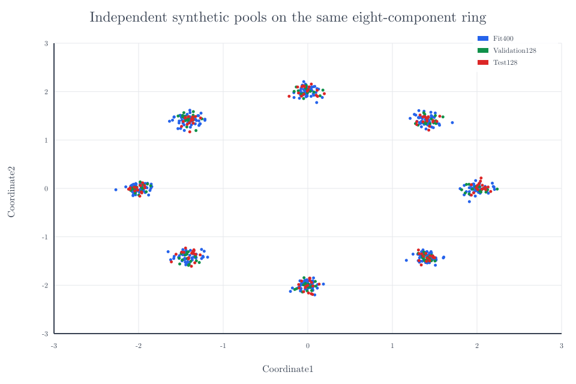
Keep both full fitting schedules and every selected write visible
Clipped WGAN uses RMSProp5e-5,rho.9,epsilon1e-8 inside the square root. WGAN-GP uses Adam1e-4,beta1=0,beta2=.9,epsilon1e-8 outside its bias-corrected square root, and penalty coefficient10. Both have separate optimizer states for G and C. D and G objectives consume raw critic scores; there is no sigmoid/classifier.
Every critic phase uses fresh z(seed5601+Cstep) and alpha(seed6601+Cstep), with
the same real batch for its three critic steps. G then gets fresh z(seed7601+Gstep)
and alpha(seed8601+Gstep). Validation/test noise seeds5527/5531 and alpha5537/5549
remain fixed. MidpointUniform consumes one local MT word per alpha, with Double
midpoint arithmetic before one final Float32 cast. Source Gaussian banks preserve
their own draw order. No other RNG or a validation/test score selects training.
The complete program preserves all original artifacts and stores every first-step phase derivative and final probe. It uses native Image/draw_circle to preserve the source's exact512x512 PNG artifacts; the report's labelled numerical plots use RPlot. Checkpoints restore independent stores and both optimizers remain caller-owned. All unselected-store values stay bit exact at each update; no clip occurs during the penalty trial. Native API calls calculate the symbolic input derivative with create_graph=true for training and false under no-grad for evaluation.
#include <dm/dm.hpp>
namespace nn = dm::nn;
namespace m = nn::models;
using Arrays = std::map<std::string, nn::Tensor>;
using nn::Tensor;
namespace {
void Require(bool condition, const std::string& message) {
if (!condition)
throw std::runtime_error(message);
}
void Near(double actual, double expected, double tolerance, const std::string& message) {
Require(std::abs(actual - expected) <= tolerance, message);
}
void SaveArrays(const std::string& path, const Arrays& a) {
nn::save_npz(path, nn::NamedTensors(a.begin(), a.end()));
}
bool Equal(const Tensor& a, const Tensor& b) {
return nn::equal_bits(a, b);
}
bool Equal(const Arrays& a, const Arrays& b) {
if (a.size() != b.size())
return false;
for (const auto& [key, value] : a)
if (!b.count(key) || !Equal(value, b.at(key)))
return false;
return true;
}
Tensor Gaussian(std::int64_t rows, std::int64_t width, std::uint64_t seed) {
return nn::cast(
m::GaussianNoise({rows, width}, 1, seed).reshape({rows, width}), nn::DType::Float32);
}
double MaxAbsDiff(const Tensor& a, const Tensor& b) {
return nn::max(nn::abs(nn::cast(a, nn::DType::Float64) - nn::cast(b, nn::DType::Float64))).item();
}
void Finite(const Arrays& a, const std::string& message) {
for (auto& [key, v] : a)
for (double x : v.to_vector<double>())
Require(std::isfinite(x), message + key);
}
Arrays Fields(const m::WassersteinGanOutput& o) {
return {
{"fake", o.fake},
{"real_score", o.real_score},
{"fake_score", o.fake_score},
{"interpolation", o.interpolation},
{"input_gradient", o.input_gradient},
{"symbolic_input_gradient", o.symbolic_input_gradient},
{"norm", o.norm},
{"penalty", o.penalty},
{"critic_gap", o.critic_gap},
{"generator_loss", o.generator_loss},
{"critic_loss", o.critic_loss}};
}
Tensor Alpha(std::int64_t rows, std::uint32_t seed) {
return nn::MidpointUniform(rows, 1, seed);
}
Tensor Points(std::int64_t rows, std::uint32_t seed) {
return m::GaussianRingPoints(rows, seed);
}
// Preserve the source's exact raster artifact using the existing native drawing API.
int Plot(const std::filesystem::path& path, const Tensor& real, const Tensor& fake) {
namespace im = dm::image;
im::Image image(512, 512, im::ImageMode::RGB, im::Pixel{248, 248, 248});
int outside = 0;
for (int group : {0, 1}) {
auto points = (group ? fake : real).to_vector<float>();
for (std::size_t k = 0; k < points.size() / 2; ++k) {
double px = points[2 * k], py = points[2 * k + 1];
if (std::abs(px) > 3 || std::abs(py) > 3) {
++outside;
continue;
}
int x = int(std::floor((px + 3) / 6 * 511 + .5)),
y = int(std::floor((3 - py) / 6 * 511 + .5));
im::draw_circle(
image, x, y, 2, group ? im::Pixel{210, 65, 65} : im::Pixel{65, 65, 210}, true);
}
}
im::write_png(image, path.string());
return outside;
}
double Scalar(const Arrays& a, const std::string& key) {
return a.at(key).item();
}
void Train(
const std::filesystem::path& root,
const Tensor& fit,
const Tensor& validation,
const Tensor& test,
int epochs,
bool gp,
const std::filesystem::path& init) {
const auto started = std::chrono::steady_clock::now();
const auto dir = root / (gp ? "gradient_penalty" : "clipped");
std::filesystem::create_directories(dir);
const Tensor vz = Gaussian(128, 2, 5527), tz = Gaussian(128, 2, 5531), va = Alpha(128, 5537),
ta = Alpha(128, 5549);
nn::ParameterStore g(5501), c(5503);
std::vector<nn::ParameterStore*> stores{&g, &c};
{
nn::NoGradGuard guard;
m::WassersteinCritic(c, m::WassersteinGenerate(g, nn::zeros({1, 2})));
}
auto snapshot = [&]() {
Arrays a;
for (int group : {0, 1})
for (const auto& name : stores[group]->names())
a.emplace(std::to_string(group) + "/" + name, stores[group]->at(name).detach().clone());
return a;
};
auto load = [&](const std::string& file) {
for (const auto& [key, value] : nn::load_npz(file)) {
Require(
key.size() > 2 && (key[0] == '0' || key[0] == '1') && key[1] == '/',
"known checkpoint prefix");
auto& store = *stores[key[0] - '0'];
Require(
store.contains(key.substr(2)) && store.at(key.substr(2)).shape() == value.shape(),
"known checkpoint shape");
store.set(key.substr(2), value);
}
};
auto evaluate = [&](const Tensor& x, const Tensor& z, const Tensor& alpha) {
nn::NoGradGuard guard;
auto out = Fields(m::WassersteinGan(g, c, x, z, alpha, gp ? 10. : 0., false));
Finite(out, "finite WGAN fields");
return out;
};
auto capture = [&](int group, const Tensor& x, const Tensor& z, const Tensor& alpha) {
auto out = m::WassersteinGan(g, c, x, z, alpha, gp ? 10. : 0., true);
auto values =
nn::grad(group ? out.critic_loss : out.generator_loss, stores[group]->parameters());
Arrays a;
auto names = stores[group]->names();
for (std::size_t k = 0; k < names.size(); ++k)
a.emplace(std::to_string(group) + "/" + names[k], values[k]);
return a;
};
nn::OptimizerConfig config;
config.kind = gp ? nn::OptimizerKind::Adam : nn::OptimizerKind::RMSProp;
config.beta1 = 0;
config.beta2 = .9;
config.rho = .9;
config.epsilon = 1e-8;
nn::Optimizer go(g, gp ? .0001 : .00005, config), critic(c, gp ? .0001 : .00005, config);
std::vector<nn::Optimizer*> optimizers{&go, &critic};
if (!gp)
m::ClipWassersteinCritic(c); // once before fitting, including both biases.
if (!init.empty())
load((init / (gp ? "gradient_penalty" : "clipped") / "initial_arrays.npz").string());
Require(g.count() == 82 && c.count() == 65, "147 parameters 8 tensors");
SaveArrays((dir / "initial_arrays.npz").string(), snapshot());
SaveArrays((dir / "probe-initial.npz").string(), snapshot());
nn::BatchOrder batches_order(400, 32, 5557);
int gsteps = 0, dsteps = 0;
double clipmax = 0;
std::ofstream history(dir / "history.tsv"), batches(dir / "batches.tsv");
history.precision(17);
history << "epoch\tcritic_loss\tgenerator_loss\tcritic_gap\tpenalty\n";
batches << "epoch\tstep\trow\n";
for (int epoch = 1; epoch <= epochs; ++epoch) {
batches_order.begin_epoch();
for (;;) {
const auto rows = batches_order.next();
if (rows.empty())
break;
const auto n = std::int64_t(rows.size());
const Tensor x = nn::take_rows(fit, rows);
for (int phase = 0; phase < 3; ++phase) {
const Tensor z = Gaussian(n, 2, 5601 + dsteps), a = Alpha(n, 6601 + dsteps);
if (!gsteps && phase == 0) {
const auto f = evaluate(x, z, a);
std::cout << (gp ? "GP" : "clip")
<< " first critic batch: loss=" << Scalar(f, "critic_loss")
<< ", gap=" << Scalar(f, "critic_gap") << ", penalty=" << Scalar(f, "penalty")
<< '\n';
}
const auto before = snapshot();
if (!gsteps)
SaveArrays(
(dir / ("probe-forward-c" + std::to_string(phase) + ".npz")).string(),
evaluate(x, z, a));
// Actual symbolic input derivative retains the critic path for GP.
const auto out = m::WassersteinGan(g, c, x, z, a, gp ? 10. : 0., true);
const auto gradient = nn::grad(out.critic_loss, c.parameters());
if (!gsteps) {
Arrays fields;
auto names = c.names();
for (std::size_t k = 0; k < names.size(); ++k)
fields.emplace("1/" + names[k], gradient[k]);
SaveArrays(
(dir / ("probe-gradient-c" + std::to_string(phase) + ".npz")).string(), fields);
}
critic.step(gradient); // selected C parameters only; new noise every critic step.
if (!gsteps)
SaveArrays(
(dir / ("probe-after-step-c" + std::to_string(phase) + ".npz")).string(), snapshot());
if (!gp)
m::ClipWassersteinCritic(c); // AFTER every C write, before the next forward.
if (!gsteps)
SaveArrays(
(dir / ("probe-after-c" + std::to_string(phase) + ".npz")).string(), snapshot());
const auto after = snapshot();
for (const auto& [key, value] : before)
if (key[0] == '0')
Require(Equal(value, after.at(key)), "critic step never changes G");
else if (!gp)
for (float v : after.at(key).to_vector<float>()) {
clipmax = std::max(clipmax, std::abs(double(v)));
Require(std::abs(v) <= .01f, "ALL critic weights clipped AFTER each step");
}
++dsteps;
}
const Tensor z = Gaussian(n, 2, 7601 + gsteps), a = Alpha(n, 8601 + gsteps);
const auto before = snapshot();
if (!gsteps)
SaveArrays((dir / "probe-forward-g.npz").string(), evaluate(x, z, a));
// Fresh G forward through the current critic, after all three C updates/clips.
const auto out = m::WassersteinGan(g, c, x, z, a, gp ? 10. : 0., true);
const auto gradient = nn::grad(out.generator_loss, g.parameters());
if (!gsteps) {
Arrays fields;
auto names = g.names();
for (std::size_t k = 0; k < names.size(); ++k)
fields.emplace("0/" + names[k], gradient[k]);
SaveArrays((dir / "probe-gradient-g.npz").string(), fields);
}
go.step(gradient); // no clipping after G.
if (!gsteps)
SaveArrays((dir / "probe-after-g.npz").string(), snapshot());
const auto after = snapshot();
for (const auto& [key, value] : before)
if (key[0] == '1')
Require(Equal(value, after.at(key)), "G step never changes critic");
for (auto row : rows)
batches << epoch << '\t' << gsteps << '\t' << row << '\n';
++gsteps;
}
const auto v = evaluate(validation, vz, va);
history << epoch;
for (auto key : {"critic_loss", "generator_loss", "critic_gap", "penalty"})
history << '\t' << Scalar(v, key);
history << '\n';
std::cout << (gp ? "GP" : "clip") << " epoch " << epoch
<< ": critic gap=" << Scalar(v, "critic_gap") << ", penalty=" << Scalar(v, "penalty")
<< std::endl;
}
const double seconds =
std::chrono::duration<double>(std::chrono::steady_clock::now() - started).count();
const auto final_path = (dir / "final.npz").string();
SaveArrays(final_path, snapshot());
Require(go.iterations() == 39 && critic.iterations() == 117, "39 G and117 C writes");
nn::ParameterStore rg(5501), rc(5503);
std::vector<nn::ParameterStore*> restored{&rg, &rc};
{
nn::NoGradGuard guard;
m::WassersteinCritic(rc, m::WassersteinGenerate(rg, nn::zeros({1, 2})));
}
if (!gp)
m::ClipWassersteinCritic(rc);
for (const auto& [key, value] : nn::load_npz(final_path))
restored[key[0] - '0']->set(key.substr(2), value);
auto restored_arrays = [&]() {
Arrays a;
for (int k : {0, 1})
for (const auto& name : restored[k]->names())
a.emplace(std::to_string(k) + "/" + name, restored[k]->at(name).detach().clone());
return a;
};
auto restored_evaluate = [&](const Tensor& x, const Tensor& z, const Tensor& alpha) {
nn::NoGradGuard guard;
return Fields(m::WassersteinGan(rg, rc, x, z, alpha, gp ? 10. : 0., false));
};
auto generate = [&](const Tensor& z) {
nn::NoGradGuard guard;
return m::WassersteinGenerate(rg, z);
};
Require(Equal(snapshot(), restored_arrays()), "all 8 vars restore exact");
const auto before = restored_arrays();
const auto output = restored_evaluate(test, tz, ta);
SaveArrays((dir / "probe-final-output.npz").string(), output);
for (int group : {0, 1})
SaveArrays(
(dir / ("probe-final-gradient-" + std::to_string(group) + ".npz")).string(),
capture(group, test, tz, ta));
const auto hand = output.at("input_gradient").to_vector<float>(),
symbolic = output.at("symbolic_input_gradient").to_vector<float>();
double jacobian = 0;
for (std::size_t i = 0; i < hand.size(); ++i) {
jacobian = std::max(jacobian, std::abs(double(hand[i]) - symbolic[i]));
Near(hand[i], symbolic[i], 2e-6, "explicit Jacobian matches actual input gradient");
}
const Tensor repeat = generate(tz);
Require(Equal(repeat, output.at("fake")), "noise ONLY generation exact");
const Tensor changed = generate(Gaussian(128, 2, 5573));
const Tensor zero = generate(nn::zeros({128, 2}));
SaveArrays((dir / "probe-noise-controls.npz").string(), {{"changed", changed}, {"zero", zero}});
Require(!Equal(changed, repeat), "changed noise affects G");
const auto single = generate(nn::take_rows(tz, {0})).to_vector<float>(),
all = repeat.to_vector<float>();
double parity = 0;
for (int j = 0; j < 2; ++j)
parity = std::max(parity, std::abs(double(single[j]) - all[j]));
Require(parity < 2e-6, "single batch parity");
Require(Equal(before, restored_arrays()), "immutable inference");
const int outside = Plot(dir / "samples.png", test, repeat);
std::ofstream meta(dir / "metrics.json");
meta.precision(17);
meta << "{\"parameters\":147,\"gradient_penalty\":" << (gp ? "true" : "false")
<< ",\"epochs\":" << epochs << ",\"generator_steps\":" << gsteps
<< ",\"critic_steps\":" << dsteps << ",\"maximum_clipped_critic_parameter\":" << clipmax
<< ",\"plot_outside_count\":" << outside << ",\"single_batch_max_error\":" << parity
<< ",\"jacobian_max_error\":" << jacobian;
for (auto key : {"critic_loss", "generator_loss", "critic_gap", "penalty"})
meta << ",\"test_" << key << "\":" << Scalar(output, key);
meta << "}\n";
Require(bool(meta) && bool(history) && bool(batches), "complete WGAN records");
meta.close();
history.close();
batches.close();
std::cout << (gp ? "GP" : "clip") << ": D steps=" << dsteps << ", G steps=" << gsteps
<< ", test gap=" << Scalar(output, "critic_gap") << ", GP=" << Scalar(output, "penalty")
<< ", critic loss=" << Scalar(output, "critic_loss")
<< ", Jacobian max error=" << jacobian
<< "; isolation/clip/restore/noiseOnly/batch/immutable PASS (training " << seconds
<< " s)" << std::endl;
}
} // namespace
int main() {
const std::filesystem::path root = "build/wasserstein_gan";
std::filesystem::create_directories(root);
const int epochs = 3;
auto fit = Points(400, 5507), validation = Points(128, 5519), test = Points(128, 5521);
SaveArrays(
(root / "data.npz").string(), {{"fit", fit}, {"validation", validation}, {"test", test}});
nn::BatchOrder first(400, 32, 5557);
first.begin_epoch();
Arrays priors{
{"first_real", nn::take_rows(fit, first.next())},
{"validation_z", Gaussian(128, 2, 5527)},
{"test_z", Gaussian(128, 2, 5531)},
{"validation_alpha", Alpha(128, 5537)},
{"test_alpha", Alpha(128, 5549)},
{"g_z", Gaussian(32, 2, 7601)},
{"g_alpha", Alpha(32, 8601)}};
for (int i = 0; i < 3; ++i) {
priors.emplace("critic_z" + std::to_string(i), Gaussian(32, 2, 5601 + i));
priors.emplace("critic_alpha" + std::to_string(i), Alpha(32, 6601 + i));
}
SaveArrays((root / "probe-priors.npz").string(), priors);
Train(root, fit, validation, test, epochs, false, {});
Train(root, fit, validation, test, epochs, true, {});
std::cout << "All Wasserstein variants complete with explicit native updates.\n";
std::vector<double> plot_epochs, clip_gap, gp_gap;
for (auto variant : {"clipped", "gradient_penalty"}) {
std::ifstream file(root / variant / "history.tsv");
std::string line;
std::getline(file, line);
double epoch, cl, gl, gap, penalty;
while (file >> epoch >> cl >> gl >> gap >> penalty) {
if (std::string(variant) == "clipped") {
plot_epochs.push_back(epoch);
clip_gap.push_back(gap);
} else
gp_gap.push_back(gap);
}
}
auto plot = dm::graphics::RPlot::create();
plot.y_limits(-.02, .015)
.lines(plot_epochs, clip_gap, "Clipped RMSProp", {37, 99, 235}, 2)
.points(plot_epochs, clip_gap, "", {37, 99, 235}, 4)
.lines(plot_epochs, gp_gap, "Gradient penalty Adam", {220, 38, 38}, 2)
.points(plot_epochs, gp_gap, "", {220, 38, 38}, 4)
.x_label("Completed epoch; fixed final3")
.y_label("Validation mean(real score)-mean(fake score)")
.title("An unconverged critic gap is not a certified distance")
.save_svg("build/wgan_gap.svg");
}clip first critic batch: loss=4.81026e-13, gap=-4.81026e-13, penalty=0.999998 clip epoch 1: critic gap=-4.58048e-06, penalty=0.999795 clip epoch 2: critic gap=-7.10991e-06, penalty=0.999727 clip epoch 3: critic gap=-5.01595e-06, penalty=0.999813 clip: D steps=117, G steps=39, test gap=1.29041e-07, GP=0.999813, critic loss=-1.29041e-07, Jacobian max error=0; isolation/clip/restore/noiseOnly/batch/immutable PASS (training 0.0288585 s) GP first critic batch: loss=4.40766, gap=0.10469, penalty=0.451235 GP epoch 1: critic gap=-0.0100408, penalty=0.417256 GP epoch 2: critic gap=-0.0120474, penalty=0.374761 GP epoch 3: critic gap=-0.0133545, penalty=0.33426 GP: D steps=117, G steps=39, test gap=0.00198581, GP=0.348145, critic loss=3.47947, Jacobian max error=0; isolation/clip/restore/noiseOnly/batch/immutable PASS (training 0.0289696 s) All Wasserstein variants complete with explicit native updates.
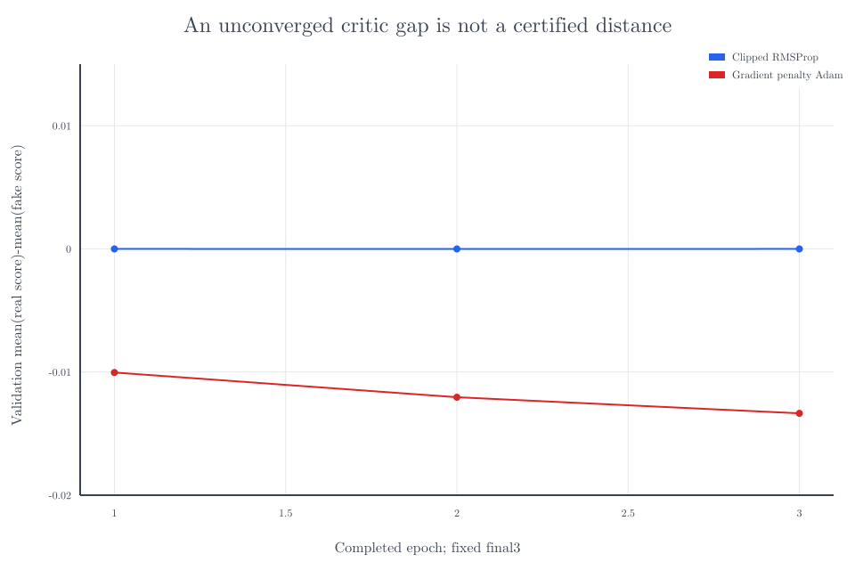
Compare the norm penalty across the two trials
The clipping trial still reports its gradient-norm penalty even though that term does not enter its critic objective. Its near-zero Jacobians incur a penalty near1. The penalty trial reduces this diagnostic over the three epochs, but its final test penalty about.348145 remains far from zero. A lower norm penalty at sampled interpolations does not prove global Lipschitz continuity or correct sampling.
#include <dm/dm.hpp>
int main() {
std::vector<double> x, clip, gp;
for (auto variant : {"clipped", "gradient_penalty"}) {
std::ifstream f(std::filesystem::path("build/wasserstein_gan") / variant / "history.tsv");
std::string h;
std::getline(f, h);
double e, c, g, gap, p;
while (f >> e >> c >> g >> gap >> p) {
if (std::string(variant) == "clipped") {
x.push_back(e);
clip.push_back(p);
} else
gp.push_back(p);
}
}
auto plot = dm::graphics::RPlot::create();
plot.y_limits(0, 1.5)
.lines(x, clip, "Clipped diagnostic only", {37, 99, 235}, 2)
.points(x, clip, "", {37, 99, 235}, 4)
.lines(x, gp, "GP fitted coefficient10", {220, 38, 38}, 2)
.points(x, gp, "", {220, 38, 38}, 4)
.x_label("Completed epoch; no early stopping")
.y_label("Validation mean((input-gradient norm-1)^2)")
.title("The two trials optimize different critic objectives")
.save_svg("build/wgan_penalties.svg");
}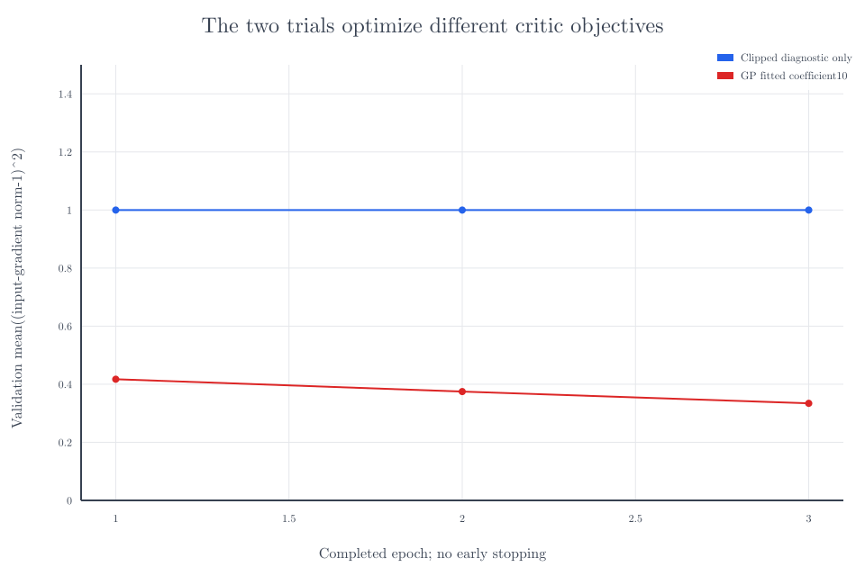
Inspect the fixed final samples: Clipped WGAN
The clipped trial leaves a diagonal band of generated points through the centre; it does not match the eight separated ring components. Its tiny test critic gap1.2904093e-7 and G loss2.707525e-5 reflect a tightly constrained critic. They do not establish that the fitted distribution is close to the real pool. Every critic value remains within Float32±.01, including biases. Source single/batch parity error is0.
#include <dm/dm.hpp>
namespace n = dm::nn;
using A = std::map<std::string, n::Tensor>;
A Read(const std::string& file) {
A a;
for (const auto& [k, v] : n::load_npz(file))
a.emplace(k, v);
return a;
}
int main() {
auto data = Read("build/wasserstein_gan/data.npz"),
out = Read("build/wasserstein_gan/clipped/probe-final-output.npz");
auto real = data.at("test"), fake = out.at("fake");
auto p = dm::graphics::RPlot::create();
p.x_limits(-3, 3)
.y_limits(-3, 3)
.points(
n::select(real, 1, 0).to_vector<double>(),
n::select(real, 1, 1).to_vector<double>(),
"Real test128",
{37, 99, 235},
3)
.points(
n::select(fake, 1, 0).to_vector<double>(),
n::select(fake, 1, 1).to_vector<double>(),
"Fixed-code generated128",
{220, 38, 38},
3)
.x_label("Coordinate1")
.y_label("Coordinate2")
.title("Clipped WGAN: fixed final checkpoint")
.save_svg("build/wgan_clipped.svg");
}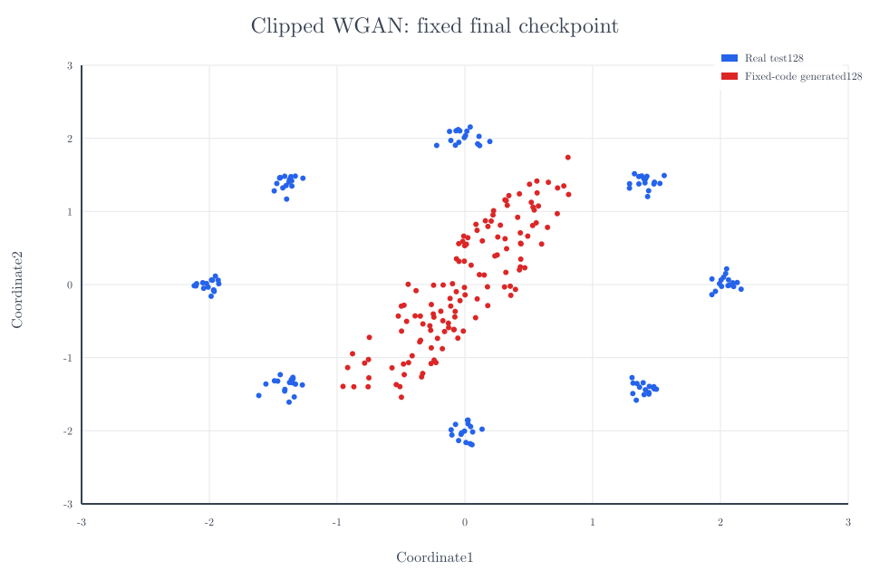
Inspect the fixed final samples: WGAN with gradient penalty
The penalty trial also leaves its samples far from the ring after only39 G updates. Test gap.0019858144, critic loss3.4794657 and G loss.023849549 are reported with the samples. Its critic is not clipped. Each displayed point is a fixed test-code output; there is no image/point selection, fitted class matching or best-epoch choice. Both source raster plots report0 points outside[-3,3].
#include <dm/dm.hpp>
namespace n = dm::nn;
using A = std::map<std::string, n::Tensor>;
A Read(const std::string& file) {
A a;
for (const auto& [k, v] : n::load_npz(file))
a.emplace(k, v);
return a;
}
int main() {
auto data = Read("build/wasserstein_gan/data.npz"),
out = Read("build/wasserstein_gan/gradient_penalty/probe-final-output.npz");
auto real = data.at("test"), fake = out.at("fake");
auto p = dm::graphics::RPlot::create();
p.x_limits(-3, 3)
.y_limits(-3, 3)
.points(
n::select(real, 1, 0).to_vector<double>(),
n::select(real, 1, 1).to_vector<double>(),
"Real test128",
{37, 99, 235},
3)
.points(
n::select(fake, 1, 0).to_vector<double>(),
n::select(fake, 1, 1).to_vector<double>(),
"Fixed-code generated128",
{220, 38, 38},
3)
.x_label("Coordinate1")
.y_label("Coordinate2")
.title("WGAN with gradient penalty: fixed final checkpoint")
.save_svg("build/wgan_gradient_penalty.svg");
}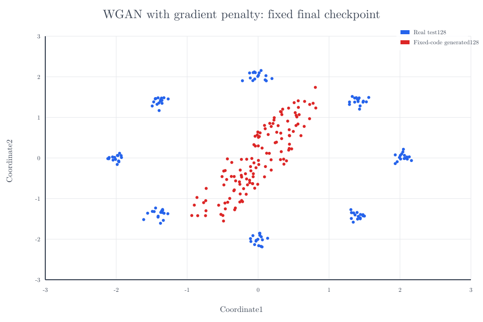
Inspect every held-out interpolation norm, not just its average penalty
These are all128 input-Jacobian norms at the source held-out interpolations, sorted separately within each trial for a distribution view. Sorting preserves every norm but does not pair row identities across curves. The horizontal target1 is a reference, not an achieved constraint. The1e-12 guard keeps the norm finite at a zero Jacobian. It does not force the Jacobian itself away from zero.
#include <dm/dm.hpp>
namespace n = dm::nn;
using A = std::map<std::string, n::Tensor>;
A Read(const std::string& file) {
A a;
for (const auto& [k, v] : n::load_npz(file))
a.emplace(k, v);
return a;
}
int main() {
std::vector<double> rank;
for (int k = 0; k < 128; ++k)
rank.push_back(k + 1);
auto c = Read("build/wasserstein_gan/clipped/probe-final-output.npz")
.at("norm")
.to_vector<double>(),
g = Read("build/wasserstein_gan/gradient_penalty/probe-final-output.npz")
.at("norm")
.to_vector<double>();
std::sort(c.begin(), c.end());
std::sort(g.begin(), g.end());
double top = 1.5 * std::max({1., c.back(), g.back()});
auto p = dm::graphics::RPlot::create();
p.y_limits(-.02, top)
.lines(rank, c, "Clipped", {37, 99, 235}, 2)
.lines(rank, g, "Gradient penalty", {220, 38, 38}, 2)
.lines({1., 128.}, {1., 1.}, "Unit norm reference", {120, 120, 120}, 1)
.x_label("Sorted held-out interpolation norm rank")
.y_label("sqrt(sum(J^2)+1e-12)")
.title("Every held-out interpolation norm is retained")
.save_svg("build/wgan_norms.svg");
std::print(
"Clipped norm range={}..{}; GP range={}..{}.\n", c.front(), c.back(), g.front(), g.back());
}Clipped norm range=9.361466072732583e-05..9.370134648634121e-05; GP range=0.18799449503421783..0.5644389986991882.
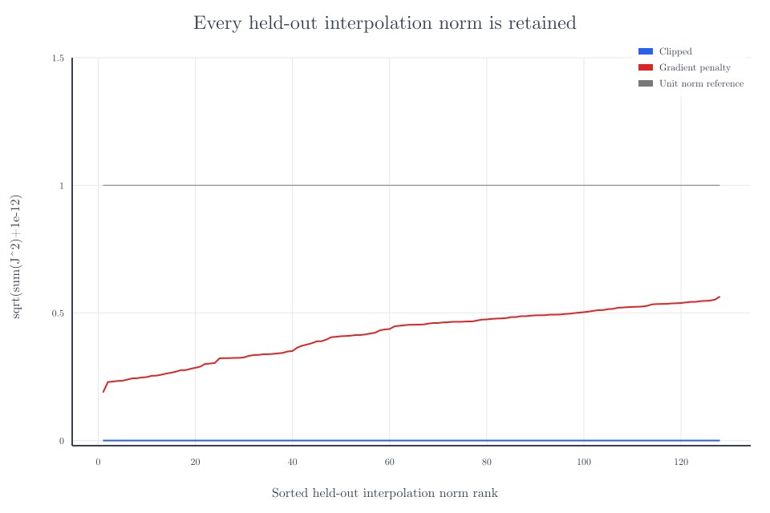
Verify the actual input derivative against a separately derived Jacobian
For C(x)=tanh(xW1+b1)w2+b2, the row Jacobian is ((1-tanh(xW1+b1)2)*w2T)*W1^T. The native output retains both this analytic calculation and the actual autograd input derivative. Both final checkpoints give source maximum disagreement0 across both coordinates of all128 interpolations. The following comparison plots every coordinate for both trials. Agreement of this diagnostic does not by itself validate the penalty parameter derivative; that requires the separate second-order checks and component comparison below.
#include <dm/dm.hpp>
namespace n = dm::nn;
using A = std::map<std::string, n::Tensor>;
A Read(const std::string& file) {
A a;
for (const auto& [k, v] : n::load_npz(file))
a.emplace(k, v);
return a;
}
int main() {
auto p = dm::graphics::RPlot::create();
p.x_limits(-1.2, 1.2).y_limits(-1.2, 2.);
p.lines({-1., 1.}, {-1., 1.}, "Identity", {120, 120, 120}, 1);
for (auto [variant, color] : std::vector<std::pair<std::string, dm::graphics::RGB>>{
{"clipped", {37, 99, 235}}, {"gradient_penalty", {220, 38, 38}}}) {
auto out = Read("build/wasserstein_gan/" + variant + "/probe-final-output.npz");
auto x = out.at("input_gradient").to_vector<double>(),
y = out.at("symbolic_input_gradient").to_vector<double>();
double error =
n::max(n::abs(out.at("input_gradient") - out.at("symbolic_input_gradient"))).item();
if (error != 0)
throw std::runtime_error("source exact input Jacobian diagnostic");
p.points(x, y, variant, color, 3);
std::print(
"{}: {} input-gradient coordinates, maximum disagreement{}.\n", variant, x.size(), error);
}
p.x_label("Analytic input-gradient coordinate")
.y_label("Actual autograd input-gradient coordinate")
.title("Two Jacobian calculations agree at all held-out points")
.save_svg("build/wgan_jacobians.svg");
}clipped: 256 input-gradient coordinates, maximum disagreement0. gradient_penalty: 256 input-gradient coordinates, maximum disagreement0.
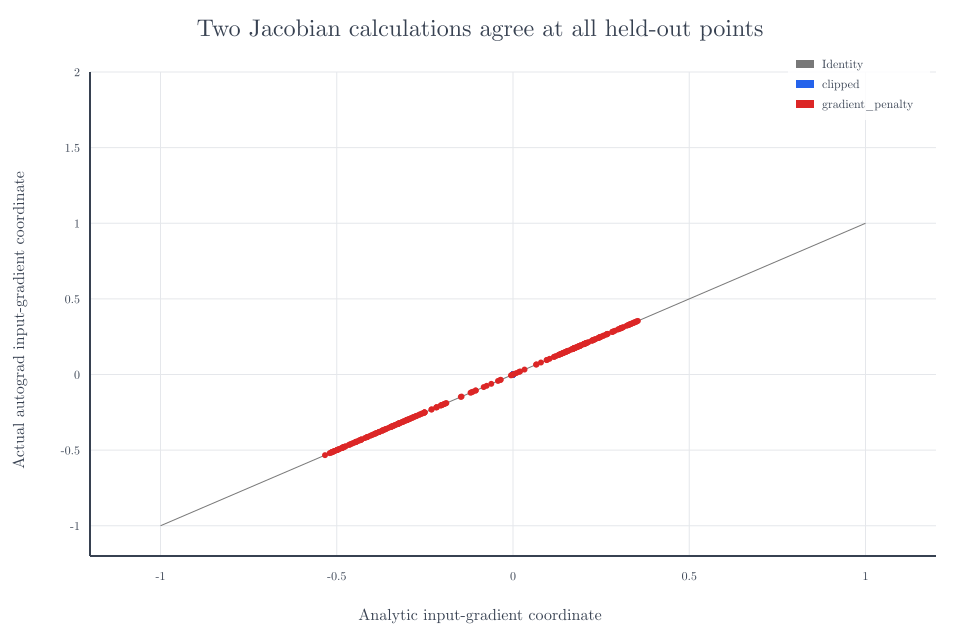
Keep the penalty’s critic-parameter gradient separate from the base game
At the penalty trial's first critic batch, compute three fresh forwards at the same initial weights: the base critic gradient,10 times the norm-penalty gradient, and the full critic gradient. The last critic bias has an unused pure-penalty path, represented by an explicit zero in the recorded65-coordinate vector. The base-game real/fake means also cancel that bias partial. No optimizer is run in this component check. All65 coordinates, their Float32 sum error and the three vector norms are retained; an independent closed-form oracle checks the components.
#include <dm/dm.hpp>
namespace n = dm::nn;
using A = std::map<std::string, n::Tensor>;
A Read(const std::string& file) {
A a;
for (const auto& [k, v] : n::load_npz(file))
a.emplace(k, v);
return a;
}
int main() {
n::ParameterStore g(5501), c(5503);
auto priors = Read("build/wasserstein_gan/probe-priors.npz");
auto x = priors.at("first_real"), z = priors.at("critic_z0"), a = priors.at("critic_alpha0");
n::models::WassersteinGan(g, c, x, z, a);
for (const auto& [key, value] :
n::load_npz("build/wasserstein_gan/gradient_penalty/initial_arrays.npz"))
(key[0] == '0' ? g : c).set(key.substr(2), value);
auto base = n::models::WassersteinGan(g, c, x, z, a, 0);
auto bg = n::grad(base.critic_loss, c.parameters());
auto partial = n::models::WassersteinGan(g, c, x, z, a, 10);
n::GradOptions unused;
unused.allow_unused = true;
auto pg = n::grad(partial.penalty, c.parameters(), unused);
auto full = n::models::WassersteinGan(g, c, x, z, a, 10);
auto fg = n::grad(full.critic_loss, c.parameters());
std::vector<float> b, p, f;
auto parameters = c.parameters();
for (std::size_t k = 0; k < parameters.size(); ++k) {
if (!pg[k].defined())
pg[k] = n::zeros_like(parameters[k]);
auto bv = bg[k].to_vector<float>(), pv = (10. * pg[k]).to_vector<float>(),
fv = fg[k].to_vector<float>();
b.insert(b.end(), bv.begin(), bv.end());
p.insert(p.end(), pv.begin(), pv.end());
f.insert(f.end(), fv.begin(), fv.end());
}
auto bt = n::from_vector(b, {65}), pt = n::from_vector(p, {65}), ft = n::from_vector(f, {65});
auto error = n::max(n::abs(ft - bt - pt)).item();
if (error > 2e-5)
throw std::runtime_error("gradient vector sum");
n::save_npz(
"build/wasserstein_gan/gradient-components.npz",
{{"base", bt}, {"weighted_penalty", pt}, {"full", ft}});
std::vector<double> values;
for (auto& v : {bt, pt, ft})
values.push_back(std::log10(n::sqrt(n::sum(n::square(v))).item()));
std::print("All65 critic coordinates; full-base-weightedPenalty max error{}.\n", error);
auto plot = dm::graphics::RPlot::create();
plot.y_limits(-3, 3)
.points({1., 2., 3.}, values, "", {37, 99, 235}, 6)
.x_label("1 base C gradient;2 weighted GP gradient;3 full C gradient")
.y_label("log10 Euclidean parameter-gradient norm")
.title("The penalty supplies a critic-parameter path")
.save_svg("build/wgan_gradient_components.svg");
}All65 critic coordinates; full-base-weightedPenalty max error1.430511474609375e-06.
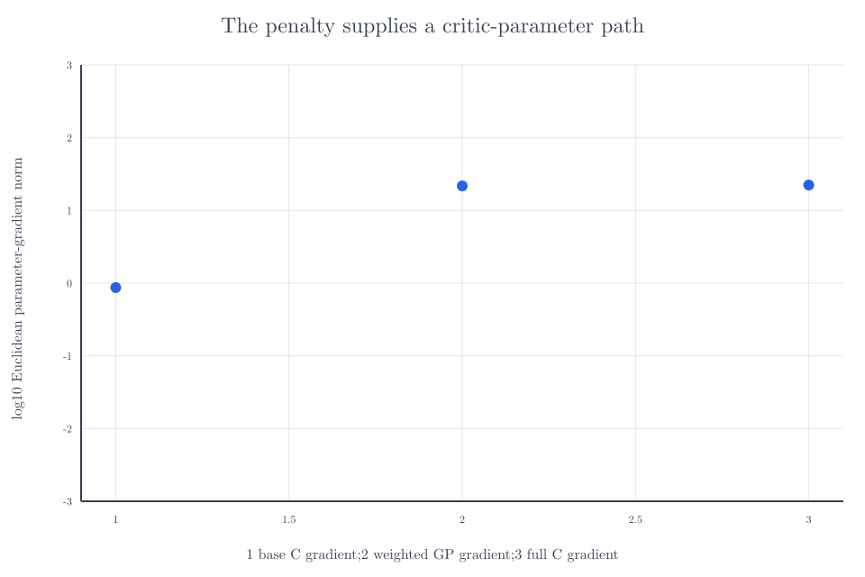
Noise sensitivity is an active-path check, not a distribution guarantee
For the final penalty-trial generator, compare all128 original test codes, a changed bank(seed5573), and128 zero codes at the same weights. The zero bank repeats one point; changed codes yield different coordinates. These checks establish a noise-only, nonconstant generation path. They do not establish mode coverage. Both short fitted distributions visibly miss the ring despite exact restore, single/batch parity and immutable inference checks.
#include <dm/dm.hpp>
namespace n = dm::nn;
using A = std::map<std::string, n::Tensor>;
A Read(const std::string& file) {
A a;
for (const auto& [k, v] : n::load_npz(file))
a.emplace(k, v);
return a;
}
int main() {
auto original = Read("build/wasserstein_gan/gradient_penalty/probe-final-output.npz").at("fake");
auto controls = Read("build/wasserstein_gan/gradient_penalty/probe-noise-controls.npz");
auto p = dm::graphics::RPlot::create();
p.x_limits(-3, 3).y_limits(-3, 3);
for (auto [name, value, color] :
std::vector<std::tuple<std::string, n::Tensor, dm::graphics::RGB>>{
{"Original128", original, {37, 99, 235}},
{"Changed codes128", controls.at("changed"), {220, 38, 38}},
{"Zero codes128", controls.at("zero"), {16, 145, 74}}})
p.points(
n::select(value, 1, 0).to_vector<double>(),
n::select(value, 1, 1).to_vector<double>(),
name,
color,
3);
p.x_label("Generated coordinate1")
.y_label("Generated coordinate2")
.title("Changing noise changes points without fitting the target ring")
.save_svg("build/wgan_noise_controls.svg");
}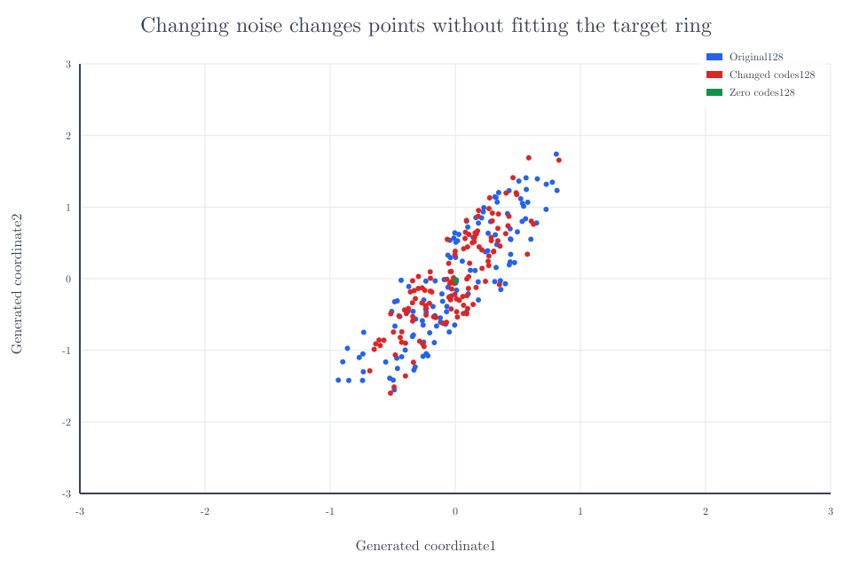